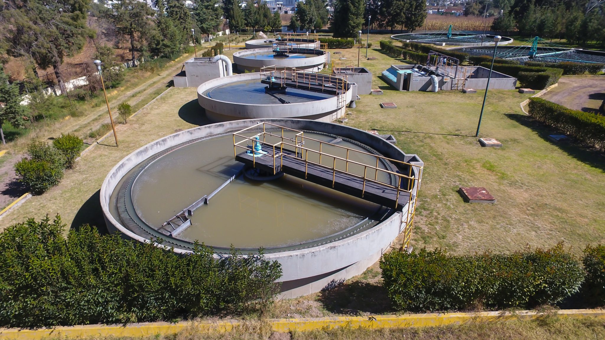

Planta de tratamiento
Una planta de tratamiento es el lugar donde se limpia el agua residual. Su objetivo es retirar contaminantes antes de que esa agua regrese a un río, lago o al suelo.
No todas las plantas funcionan exactamente igual, pero muchas usan procesos físicos, químicos y biológicos para limpiar el agua.